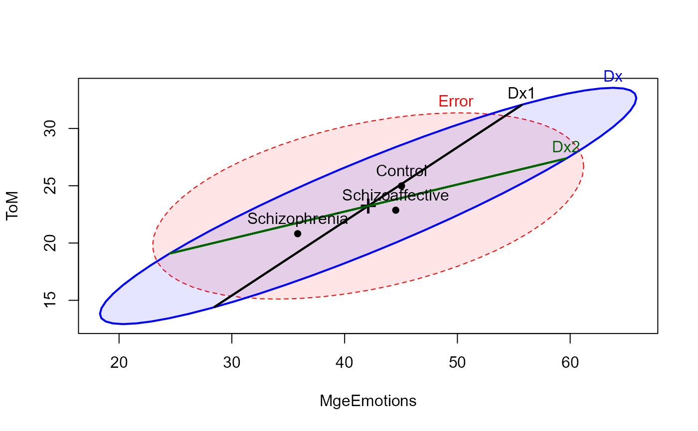
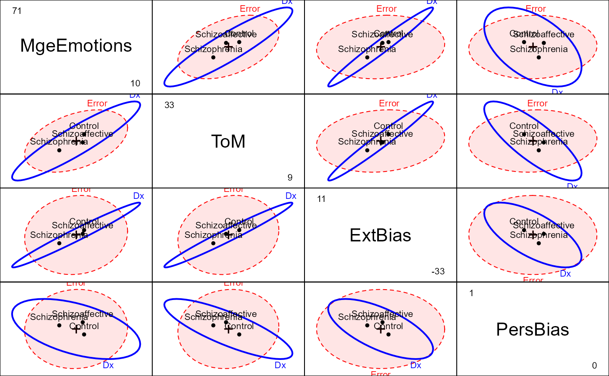

The general purpose of the study (Hartman, 2016, Heinrichs et al. (2015)) was to evaluate patterns and levels of performance on neurocognitive measures among individuals with schizophrenia and schizoaffective disorder using a well-validated, comprehensive neurocognitive battery specifically designed for individuals with psychosis (Heinrichs et al. (2008))
Format
A data frame with 139 observations on the following 5 variables.
DxDiagnostic group, a factor with levels
Schizophrenia,Schizoaffective,ControlMgeEmotionsScore on the Managing emotions test, a numeric vector
ToMScore on the The Reading the Mind in the Eyes test (theory of mind), a numeric vector
ExtBiasExternalizing Bias score, a numeric vector
PersBiasPersonal Bias score, a numeric vector
Source
Hartman, L. I. (2016). Schizophrenia and Schizoaffective Disorder: One Condition or Two? Unpublished PhD dissertation, York University.
Heinrichs, R.W., Pinnock, F., Muharib, E., Hartman, L.I., Goldberg, J.O., & McDermid Vaz, S. (2015). Neurocognitive normality in schizophrenia revisited. Schizophrenia Research: Cognition, 2 (4), 227-232. doi: 10.1016/j.scog.2015.09.001
Details
The data here are for a subset of the observations in NeuroCog
for which measures on various scales of social cognition were also
available. Interest here is on whether the schizophrenia group can be
distinguished from the schizoaffective group on these measures.
The Social Cognitive measures were designed to tap various aspects of the
perception and cognitive procession of emotions of others. Emotion
perception was assessed using a Managing Emotions (MgeEmotions) score
from the MCCB. A "theory of mind" (ToM) score assessed ability to
read the emotions of others from photographs of the eye region of male and
female faces. Two other measures, externalizing bias (ExtBias) and
personalizing bias (PersBias) were calculated from a scale measuring
the degree to which individuals attribute internal, personal or situational
causal attributions to positive and negative social events.
See NeuroCog for a description of the sample. Only those with
complete data on all the social cognitive measures are included in this data
set.
There is one extreme outlier in the schizophrenia group and other possible outliers in the control group, left in here for tutorial purposes.
Examples
library(car)
data(SocialCog)
SC.mod <- lm(cbind(MgeEmotions, ToM, ExtBias, PersBias) ~ Dx, data=SocialCog)
SC.mod
#>
#> Call:
#> lm(formula = cbind(MgeEmotions, ToM, ExtBias, PersBias) ~ Dx,
#> data = SocialCog)
#>
#> Coefficients:
#> MgeEmotions ToM ExtBias PersBias
#> (Intercept) 41.80533 22.88849 1.75603 0.65488
#> Dx1 3.24012 2.09636 1.01670 -0.07297
#> Dx2 -4.34806 -1.02636 -0.85233 -0.01599
#>
car::Anova(SC.mod)
#>
#> Type II MANOVA Tests: Pillai test statistic
#> Df test stat approx F num Df den Df Pr(>F)
#> Dx 2 0.21207 3.9735 8 268 0.0001817 ***
#> ---
#> Signif. codes: 0 '***' 0.001 '**' 0.01 '*' 0.05 '.' 0.1 ' ' 1
# test hypotheses of interest in terms of contrasts
print(linearHypothesis(SC.mod, "Dx1"), SSP=FALSE)
#>
#> Multivariate Tests:
#> Df test stat approx F num Df den Df Pr(>F)
#> Pillai 1 0.1355144 5.21218 4 133 0.00062359 ***
#> Wilks 1 0.8644856 5.21218 4 133 0.00062359 ***
#> Hotelling-Lawley 1 0.1567573 5.21218 4 133 0.00062359 ***
#> Roy 1 0.1567573 5.21218 4 133 0.00062359 ***
#> ---
#> Signif. codes: 0 '***' 0.001 '**' 0.01 '*' 0.05 '.' 0.1 ' ' 1
print(linearHypothesis(SC.mod, "Dx2"), SSP=FALSE)
#>
#> Multivariate Tests:
#> Df test stat approx F num Df den Df Pr(>F)
#> Pillai 1 0.0697390 2.492658 4 133 0.046059 *
#> Wilks 1 0.9302610 2.492658 4 133 0.046059 *
#> Hotelling-Lawley 1 0.0749672 2.492658 4 133 0.046059 *
#> Roy 1 0.0749672 2.492658 4 133 0.046059 *
#> ---
#> Signif. codes: 0 '***' 0.001 '**' 0.01 '*' 0.05 '.' 0.1 ' ' 1
#' ## HE plots
heplot(SC.mod, hypotheses=list("Dx1"="Dx1", "Dx2"="Dx2"),
fill=TRUE, fill.alpha=.1)

pairs(SC.mod, fill=c(TRUE,FALSE), fill.alpha=.1)
